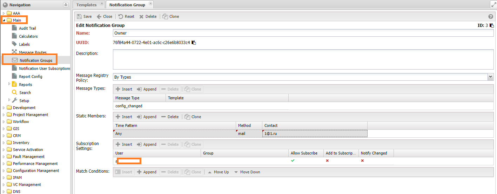
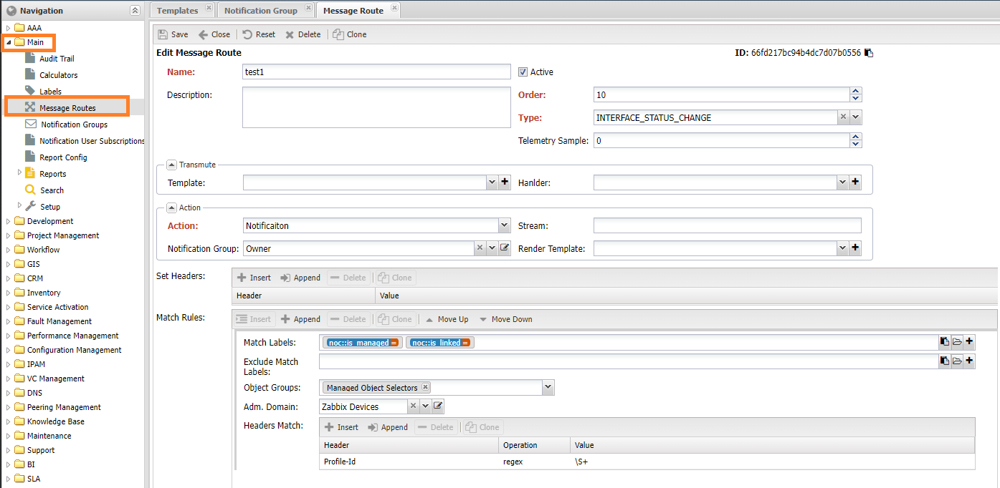

Уведомления по событиям системы¶
Для оперативного информирования пользователя (User) (или внешней системы) по системным событиям в НОКе используется механизм Уведомлений (Notification). В состав механизма работы с уведомлениями входят следующие компоненты:
- Сообщение (Message) - набор сведений о произошедшем событии
- Группы уведомлений (Notification Group) - списки контактов для получения уведомления. Находятся в меню Основные (Main) -> Группы уведомлений (Notification Group)
- Маршруты доставки (Message Route) - настройки получателей событий системы. Находятся в меню Основные (Main) -> Маршруты сообщений (Message Route)
- Настройки пользователя (Notification User Settings) - настройки доставки уведомлений пользователю. Включают в себя:
- Список контактов для доставки в Профиле пользователя (User Profile)
- Указание времени в рамках которого допустима отправка уведомлений
- Настройки групп уведомлений (Notification Group)
- Контакты (Contacts) - идентификатор получателя в канале доставки (Notification Channel)
- Подписка на уведомления (Notification Subscription) - список объектов по которым пользователь получает уведомления
- Маршрутизатор сообщений (Message Route) - компонент системы, отвечающий за доставку сообщений адресату. Находится внутри любого процесса, отправляющего сообщений пользователю.
- MX - сервис, отвечающий за доставку сообщений внешних отправителей (Remote Sender)
За доставку уведомлений система использует сервисы-отправители (Sender), на текущий момент доступно 2 отправителя:
- mailsender - доставка по почте
- tgsender - доставка сообщения в телеграмм
Процедура отправки уведомления¶
При наступлении события в системе, оно порождает сообщение, заполняя его контекстом (набором данных), в котором событие произошло. Само сообщение (Message) состоит из 3 частей:
- тип сообщения (Message Type) - описание содержимого сообщения
- метаданные отправителя (MetaData) - дополнительная информация по отправителю. Передаются в заголовке
- тело сообщения (Body) - структура
JSONсодержащая контекст события - вложения (Attachments) - вложения
После создания сообщения (Message) передаётся попадает в специальный компонент - маршрутизатор события (Message Router), которых на базе набора правил выполняет одно или несколько действий:
- Notification - зарегистрировать событие в Группе уведомления (Notification Group)
- Stream - передать событие в соответствующий топик (topic) внутренней шины. Обычно это kafkasender для передачи сообщения внешним системам через сервис Kafka
- Dump - распечатать событие в логе сервиса отправителя
- Drop - остановить обработку события
Правила для маршрутизации представляют собой список, отсортированный в порядке возрастания по полю order. Поэтому на сообщение может быть выполнено несколько действий. Основной критерий - это тип события Message Type, дополнительные это условия по объекту (Managed Object) по которому создано уведомление. В системе представлены следующие типы событий:
| Тип сообщения | Сервис | ПРичина | Настройка (раздел message) | Описание |
|---|---|---|---|---|
| alarm | Correlator | Открытие, изменение и закрытие аварии | enable_alarm | alarm |
| managedobject | - | enable_managedobject | managedobject | |
| reboot | Uptime Discovery | Переход аптайма устройства через 0 | enable_reboot | reboot |
| snmptrap | SNMP Trap Collector | Получение сообщения SNMP с устройства | enable_snmptrap | snmptrap |
| syslog | Syslog Collector | Получение Syslog сообщения с устройства | enable_syslog | syslog |
| event | Classifier | Получение нового события из коллектора | enable_event | event |
| interface_status_change | Interface Status Discovery | Изменение оперативного состояние интерфейса | - | interface_status_change |
| config_changed | Config Discovery | Изменение текстовой конфигурации устройства | - | config_changed |
| object_new | - | Добавление устройства (Managed object) | - | object_new |
| object_deleted | - | Удаление устройства (Managed Object) | - | object_deleted |
| version_changed | Version Discovery | Изменение версии ПО устройства | - | version_changed |
| config_policy_violation | Config Discovery | Обнаружение проблем в конфигурации | - | config_policy_violation |
| diagnostic_change | - | - | ||
| notification | - | Отправка текстового уведомления | - | |
| metrics | Metrics Service | Поступление значений метрик в системе | enable_metrics,enable_metric_scopes | metrics |
Note
На тип сообщения metrics, запрещено настраивать уведомления (Notification)
Параметры в колонке Настройка указываются в секции message глобальной конфигурации:
./noc config dump message
message:
ds_limit: 1000
embedded_router: true
enable_alarm: false
enable_diagnostic_change: false
enable_event: false
enable_managedobject: false
enable_metric_scopes: []
enable_metrics: false
enable_reboot: false
enable_snmptrap: false
enable_syslog: false
Настройка уведомлений¶
Уведомление формируется на базе сообщения (Message) путём применения шаблона (Template). Для настройки их доставки адресатам отвечают Группы уведомлений (Notification Group). Она объединяет контакты и пользователей, которым необходимо доставить уведомление. Сами сообщения могут попасть в группу тремя способами (регулируется настройкой):
- Указание в настройках источника. Пример: подписка на отчёты, профиль сервиса. В этом случае сообщения регистрируются в группе и отправляются зарегистрированным контактам.
- Любые сообщения системы. В этом случае в группу попадают все сообщения, регистрируемые в системе
- Указанных типов. В группе попадают сообщения, перечисленные в разделе типов

После попадания в группу, сообщение проверяется на соответствие критериев (Condition), если таковые указаны. И после этого передаётся для отправки адресатам. Адресатом в группе может быть пользователь (User) или контакт (Contact), также доступны следующие настройки:
- Имя (Name)
- Описание (Description)
- Message Register Policy - политика регистрации сообщений
- Disable - отключить автоматическую регистрацию сообщений
- Any - любые сообщения
- By Types - только для сообщений, описанных в типах
- Message Types - настройки для типов сообщений
- Message Type - тип сообщения
- Template - ссылка на шаблон
- Адресаты (Static Members) - список адресатов для отправки зарегистрированных сообщений
- Notification Method - канал отправки: почта, tg - telegram
- Contact - адресат
- Language - язык для отправки
- Time Pattern - ссылка на маску времени
- Настройки подписки (Subscription Settings) - настройки подписки на группу
- Пользователь (User) - ссылка на пользователя
- Группа (Group) - ссылка на группу пользователей
- Разрешить подписку (Allow Subscribe) - разрешить пользователю подписываться на группу
- Auto Subscription - автоматически включить пользователя в рассылку
- Notify If Subscribed - уведомлять при изменениях подписки. Например, если пользователь включается или исключается из группы
- Критерии (Conditions) - условия для совпадения сообщений
- Labels - набор меток
- Resource Groups - набор групп
- Administrative Domain - зона ответственности
Note
Если в группе не указаны критерии (Conditions) то считается что подходят любые сообщения указанного типа
Настройка маршрутизации сообщений¶
Расширенные настройки обработки сообщения доступны в меню Маршруты Сообщения (Main -> Message Routes). Они предоставляют следующие возможности:
- Модифицировать сообщение
- Зарегистрировать уведомление в группе. При регистрации игнорируются настройки Message Register Policy группы
- Переслать сообщение во внешнюю систему (через шину)

Поведение устанавливается
- Имя (Name) - наименование правила
- Активно (Is Active) - правило включено в работу
- Описание (Description)
- Порядок (Order) - порядок обработки
- Тип сообщения (Type)
- Критерии (Match) - критерии совпадения сообщения с правилом. Если не указаны - выполнится для любого
- Метки (Labels)
- Группы (Resource Groups)
- Зоны Ответственности (Administrative Domain)
- Headers Match - совпадение заголовков сообщения
- Telemetry Sample - отправка телеметрии по обработке сообщения
- Преобразователь сообщения (Transmute Handler) - обработчик для сообщения, позволяет изменить заголовки и тело (body) передаваемого сообщения. Необходимо регистрация в Handlers
- Шаблон преобразования (Transmute Template) - шаблон (template) для тела сообщения
- Действие (Action)
- Notification - отправить уведомление на группу, указанную в настройке (Notification Group)
- Stream - переслать сообщение в топик, указанный в настройке Stream
- Dump - распечатать сообщение в логе сервиса
- Drop - остановить обработку сообщения
- Stream - название потока во внутренней шине
- Группа уведомления (Notification Group) - группа, на которую отправить уведомление. Работает при действии Notification
- Шаблон уведомления (Render Template) - шаблон уведомления. Если не задан будет использоваться по умолчанию для соответствующего типа (Message Type)
- Заголовки (Headers) - установить заголовки для сообщения
Изменение шаблона сообщения¶
Для создания уведомления необходимо к сообщению применить Шаблон (Template). Таковые настраиваются в меню Main -> Setup -> Templates. Для работы с шаблонами используется библиотека Jinja2, набор доступных переменных можно найти в таблице типов сообщений (колонка Описание).

Warning
Поле Тип сообщения MessageType задаёт шаблон по умолчанию для типа сообщения. Менять его не желательно
Проверка работы¶
В том случае если после выполненных настроек уведомление не приходит необходимо удостовериться в правильности настроек всех компонентов.
Для проверки Группы уведомления (Notification Group) на панели инструментов списка есть кнопка Group Action а в ней пункт Test Selected Group. На контакты из выбранных групп должно придти тестовое сообщение. В случае отсутствия такого необходимо проверить правильность указанных контактов и запущены ли соответствующие сервисы: mailsender и tgsender, выполнена ли их настройка.
Если тестовое сообщение дошло до указанных контактов (Contact). То возможная причина в том, что сервисы не подхватили настройки. Обновить их можно командой ./noc datastream rebuild --datastream cfgmxroute и после этого перезапустить НОК.
Подписка на уведомления¶
Настройка уведомлений для пользователя
Подписка на уведомления по объекту